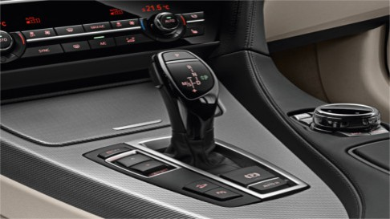

<table width="800" border="1" id="tablahatter">
	<tr>    
		<td><center><br>BMW</td></center></td>
		<td><h3>BMW 6</h3>Hosszú motorházteto, rövid túlnyúlások és a farig elegánsan húzódó teto - a BMW 6-os Coupé egy kétajtós sportoló, amelyet ellenállhatatlanul elegáns aura vesz körbe. A külso által ígért minoség belül is folytatódik. A bovített funkciókat kínáló, exkluzív bikolor Nappa borkárpit, a kituno minoségu nemesfa díszbetétek és a finom, kontrasztos varrás prémium atmoszférát teremtenek. Három eros, finoman járó BMW EfficientDynamics eroforrás közül választhatnak a vásárlók: a BMW TwinPower Turbo hathengeres soros benzinmotor, a BMW TwinPower Turbo nyolchengeres benzinmotor és a BMW TwinPower Turbo hathengeres dízelmotor közül. A BMW ConnectedDrive olyan innovációi, mint a Head-Up Display vagy a Driving Assistant Plus még ebben az exkluzív jármukategóriában is mértékadónak számítanak.</td>
	</tr>
</table>